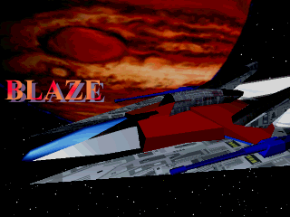

|
 |
【動作環境】 Windows95・98・NT・2000 Pentium120MHz以上 要DirectX |
| ▲▼ 操作 ▲▼ | |
|---|---|
| [Z]連射 | 通常弾（敵の弾を相殺できます） |
| [Z]押しっぱなし | 特殊武器（アイテムが無い場合バルカン） |
| [X]押しっぱなし | ダッシュ（バックファイヤーも武器になります） |
| [X]ダブルクリック | リング（MODE03は武器切替） |
| [Z][X]同時 | メガクラッシュ（面ごとに３回まで） |
| [Z][X]押さない | シールド回復（MODE 02以外） |
| [矢印] | 移動 |
| ▲▼ 遊び方 ▲▼ | |
| MODE 00 | 敵を倒すとアイテムがでます。アイテムを取ると自機の下にエネルギー残量が表示され、無くなるまで特殊攻撃が出来ます。 |
| MODE 01 | 始めに特殊武器を選択ます。エネルギーは徐々に回復しますが、使い切るとチャージの間使用できなくなります。 |
| MODE 02 | 特殊武器のリミットがありません。ガンガン撃って構いませんが、シールドは回復しません。（上級者向け） |
| MODE 03 | 特殊武器を切替できます。[X]ダブルクリックで選択します |
| OPTION | ゲームの設定をします
GAME LEVEL：難易度を設定します SCREEN MODE：スクリーンモードを設定します。３番のモードがベストですが、動かない場合他のモードを試して下さい。 フルスクリーン５は重くなりますがたいていの機種で動作します。 |
| EXIT | ゲームを終了します |
| スコア | 敵を倒すとスコアが加算されます。早く倒せば多く点数が入ります。また、敵を残さず殲滅すると、ボーナスが加算されます。
ホームページ上でランキング発表しています。 |
| ▲▼ ストーリー ▲▼ | |
|
ストーリーへ
ストーリーダイジェストへ | |
| ▲▼ 武器設定 ▲▼ | |
| 武器設定へ | |
| ▲▼ ステージ設定 ▲▼ | |
| ステージ設定へ | |
| ▲▼ システム ▲▼ | |
| [F4] | 画面モード切替（320*240→640*480→フルスクリーン３→フルスクリーン４→フルスクリーン５） |
| [F9] | 終了 |
| [Esc] | 一時停止 |
| [F7] | ステージ切替 |